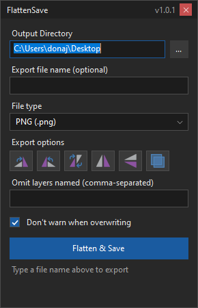

One-click flatten and save for Paint.NET. Pick a folder, file name and type, optionally rotate, mirror or omit layers, then press Flatten & Save.

Download FlattenSave_1.0.1.zip from the repository.
Copy FlattenSave.dll to Documents\paint.net App Files\Effects\ and restart Paint.NET.